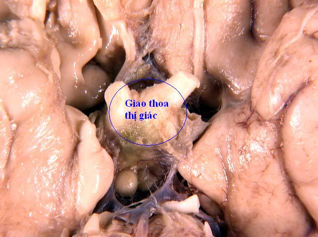
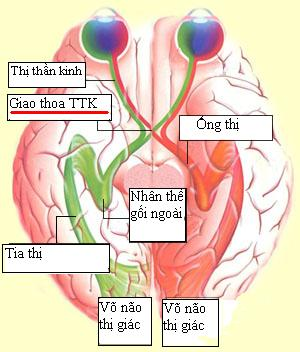

Chiasm
* Định nghĩa:
+ Giao thoa thị giác

Hình: Tiêu bản giải phẫu vùng giao thoa thị giác
+ Giao thoa thị giác được hình thành của sự hợp bởi 2 thị thần kinh. Những sợi thần kinh phía mũi của mỗi thị thần kinh chạy bắt chéo qua giao thị sang phía đối diện trong khi những sợi thái dương đến giao thị mà không bắt chéo. Sự sắp xếp này cho phép một nữa thị trường bên trái do phần bên não phải chi phối và một nữa thị trường bên phải định khu bởi phần não bên trái.
c
+ Những sợi thị thần kinh bao gồm những sợi trục từ tế hạch võng mạc của mỗi mắt. Tại giao thoa thị giác, 53% sợi trục từ võng mạc phía MŨI bắt chéo qua đường giữa để nối với những sợi thần kinh phía THÁI DƯƠNG (không bắt chéo) tạo thành ống thị. Những sợi phía mũi đảm nhận thông tin thị trường vùng thái dương. Tương tự, sợi thần kinh thái dương truyền hình ảnh từ thị trường phía mũi. Ống thị là phần tiếp theo sau giao thoa thị giác. Hầu hết những synaps sợi thần kinh ở nhân thể gối ngoài hoặc nhân trước mái (pretectal nucleus)
+ Những sợi hoàng điểm 1/2 phía mũi bắt chéo ở phần sau giao thoa thị giác. Sợi phía dưới và trên vẫn giữ nguyên vị trí khi bắt chéo. Tuy nhiên, đường đi những sợi thần kinh phía mũi dưới hơi ra phía trước ở giao thị trong khi những sợi mũi trên có xu hướng ở phía sau. Một khi bắt chéo, sợi thần kinh mũi dưới có thể tạo thành một quai ngắn quay vào bao thị thần kinh đối bên, trước khi chạy vào lại giao thị. Sự thay đổi hướng này vào thị thần kinh đối bên về mặt thuật ngữ được gọi là gối Wilbrand.
+ Một vài cấu trúc quan trọng nằm gần với giao thoa thị giác. Nhánh động mạch trên yên của động mạch cảnh trong, xoang hang phía ngoài và dưới giao thị. Thùy não trán nằm ở trên....